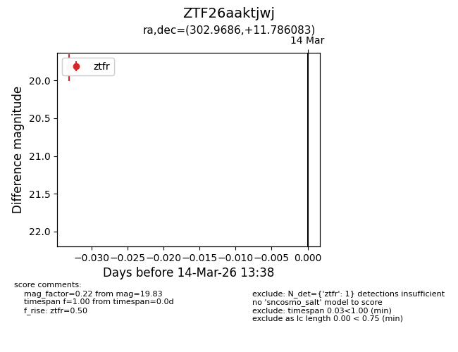
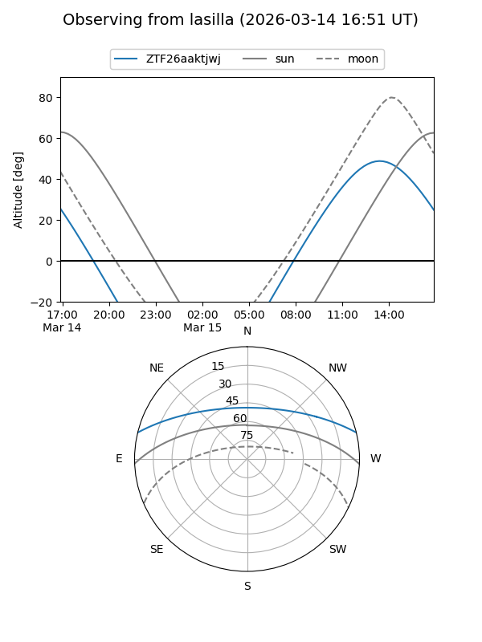
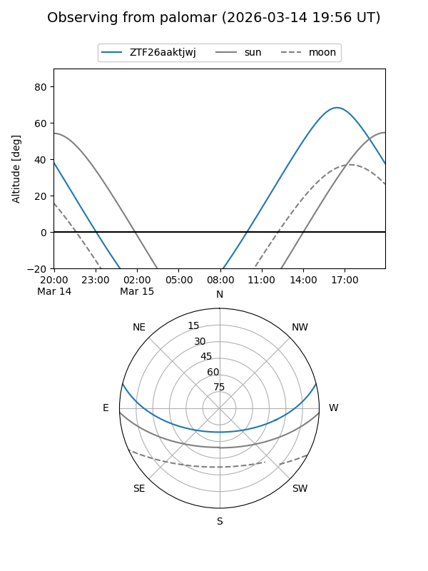
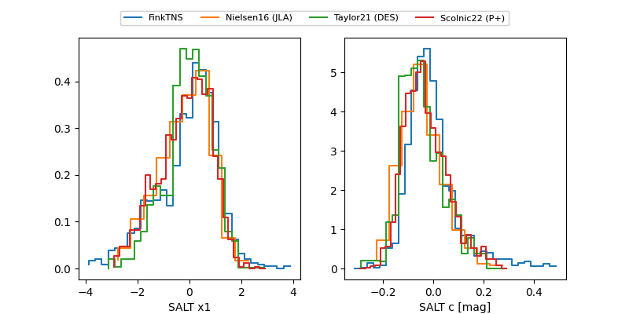

ZTF26aaktjwj
Target ZTF26aaktjwj at 2026-03-14 13:40
Aliases and brokers:
FINK: link
Lasair: link
ALeRCE: link
alt names
ZTF26aaktjwj (ztf,fink_ztf)
Coordinates:
equatorial (ra, dec) = 302.9686,+11.78608
equatorial (HMS+DMS) = 20:11:52.47,+11:47:09.90
galactic (l, b) = (52.9692,-11.91128)
Flags:
Photometry:
last ztfr=19.83
1 ztfr detections
Lightcurve

Visibility


Additional plots
